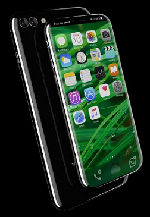
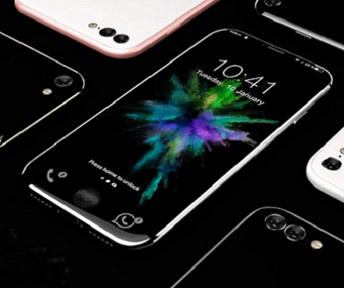
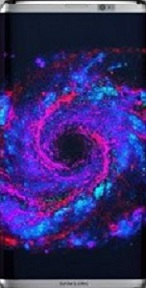

Статьи
iPhone 8-concept
Дизайнеры регулярно выкладывают в интернет «мифические» устройства, показывая,
как по их мнению мог бы выглядеть продукт любимого бренда. Чаще, конечно,
пробуют поиграть с техникой Apple, представляя свои мечты.Вы можете прочитать описание концепта
Телефон получит сканер сетчатки глаза, кнопка Home со сканером отпечатков
будет встроенной в экран, а кроме того, в нижней части дисплея появятся функциональные элементы.
Кроме того, iPhone 8 будет работать в паре с Apple Pencil. Apple может
представить особенный iPhone 8 Pro с 5,8-дюймовым экраном, который станет мини-планшетом для рисования и заметок.

Полный обзор iPhone 8-concept здесь
В начало
SAMSUNG GALAXY S8-concept
Еще немного, уже в феврале мы увидим новинку и в каком-то смысле флагман
первой половины 2017 года — Samsung Galaxy S8.Кроме того, в сети мелькнул безумный слух о том, что диагонали экранов новых
Samsung возрастут за счет отказа от клавиши Home: получим 5,7 дюймов и 6,2 дюйма.
Этот слух появился относительно недавно. К нему относятся по-разному, мне, к
примеру, нравилось наличие физической клавиши Home, она помогала вслепую
разблокировать смартфон или мгновенно запустить камеру двойным нажатием. Но
среди пользователей есть адепты наэкранных кнопок, которые так и жаждут увидеть Samsung Galaxy S8 без этой кнопки.
Но не одним «безрамочным» дизайном будет хорош телефон, Samsung планирует добавить нового интеллектуального помощника Bixby.
Ранее Samsung купила компанию Viv Labs, разработчика Siri, поэтому всё сходится.
Учитывая, насколько хорошей вышла Siri, я думаю, что Bixby получится не менее интересной и удивительной штукой.
Полный обзор SAMSUNG GALAXY S8-concept здесь
В начало


Vertu Constellation
Vertu Constellation — новая модель всемирно известной компании, она появится в продаже в
конце февраля.Характеристики у телефона нормальные, Vertu — это вам не новый Samsung, куда
впихнули самые топовые технологии. Vertu предлагает хорошую начинку, сделав
ставку на дизайн и материалы, когда можно собрать телефон под себя, выбрав
материалы и цвета, как будто заказывая новый костюм в гардероб.
Характеристики:AMOLED-экран с диагональю 5,5 дюймов и разрешением 1440х2560 точек, закрытый сапфировым стеклом.
Процессор Snapdragon 820, 4/128 ГБ памяти, слот под microSD, камера на 12 мегапикселей, сканер отпечатков пальцев,
два разъёма для SIM-карт. Работает телефон на старом Android 6.0,
у него пара фронтальных динамиков и не очень большой аккумулятор на 3220 мАч, но с поддержкой беспроводной зарядки.
Как видите, по начинке всё обычно, платить за это $5000?! Да, почему бы и нет, когда не хочется ходить с «кастомным» айфоном,
а брать в руки топовые устройства иных брендов стыдно.
Юзеры Vertu не прошивают кастомные ядра и не ждут новые версии Android, а просто пользуются приятными игрушками.
Полный обзор Vertu-Constellation здесь
В начало